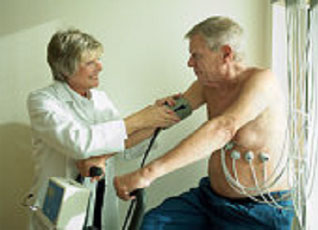

Costa Cabanillas y López Méndez
(1996) presentan una serie de técnicas que tiene como fin mejorar
los recursos para afrontar satisfactoriamente las diferentes situaciones
que puedan surgir dentro del centro residencial. Estas técnicas
son de aplicación a las situaciones comunicativas en centros sanitarios,
en el contexto de atención al usuario geriátrico y a su
familia.
Deben ir acompañadas por los elementos de la comunicación
no verbal (gestos, mirada, postura,…) y los elementos paralingüísticos
(tono, pausas, entonaciones,…), siendo importante decir que éstos,
además, no deben transmitir mensajes contradictorios al que se
pretende expresar por medio de las palabras.
A continuación vamos a exponer distintas habilidades que debe desarrollar
una auxiliar de enfermería para el trato con ancianos:
a) Escuchar activamente.
Se trata de la habilidad para escuchar de forma comprensiva, haciendo
nuestro (integrando) lo que la otra persona está intentando comunicar.
Además, el emisor recibe mensajes que indican que su interlocutor
está prestando atención a lo que él quiere comunicar.
Con esta técnica se persigue ganarse la confianza del emisor, hacer
que éste se sienta aceptado y estimularle a continuar comunicándose.
Todo esto, permite conocer a fondo los problemas, pues sólo los
que se sienten escuchados los trasmiten.
Para lograr escuchar activamente debemos:
- Prestar atención y observar al interlocutor (identificando
el contenido, las emociones, retroalimentación del mensaje);
- Prestar atención a la comunicación no verbal (gestos,
asintiendo con la cabeza, contacto visual, postura dirigida hacia el
hablante,…);
- Prestar atención a la comunicación verbal (“Sí,
sí.” “Uhm”;…);
- Evitar hacer alguna otra cosa mientras se escucha (no interrumpir,
no juzgar, no coger alguna cosa de la mesa,…).
|
Se ha de aplicar cuando queramos conseguir efectos recompensantes;
es decir, cuando queramos motivar al interlocutor, cuando deseemos identificar
un problema, cuando el mensaje parezca ser importante, cuando queramos
calmar al hablante y potenciar una relación positiva,…
No se debe emplear en situaciones en las que el usuario presente conductas
inadecuadas (hablar sin parar, quejarse continuamente,…) ya que,
en este caso estaríamos reforzando éstas.
|
|
 |